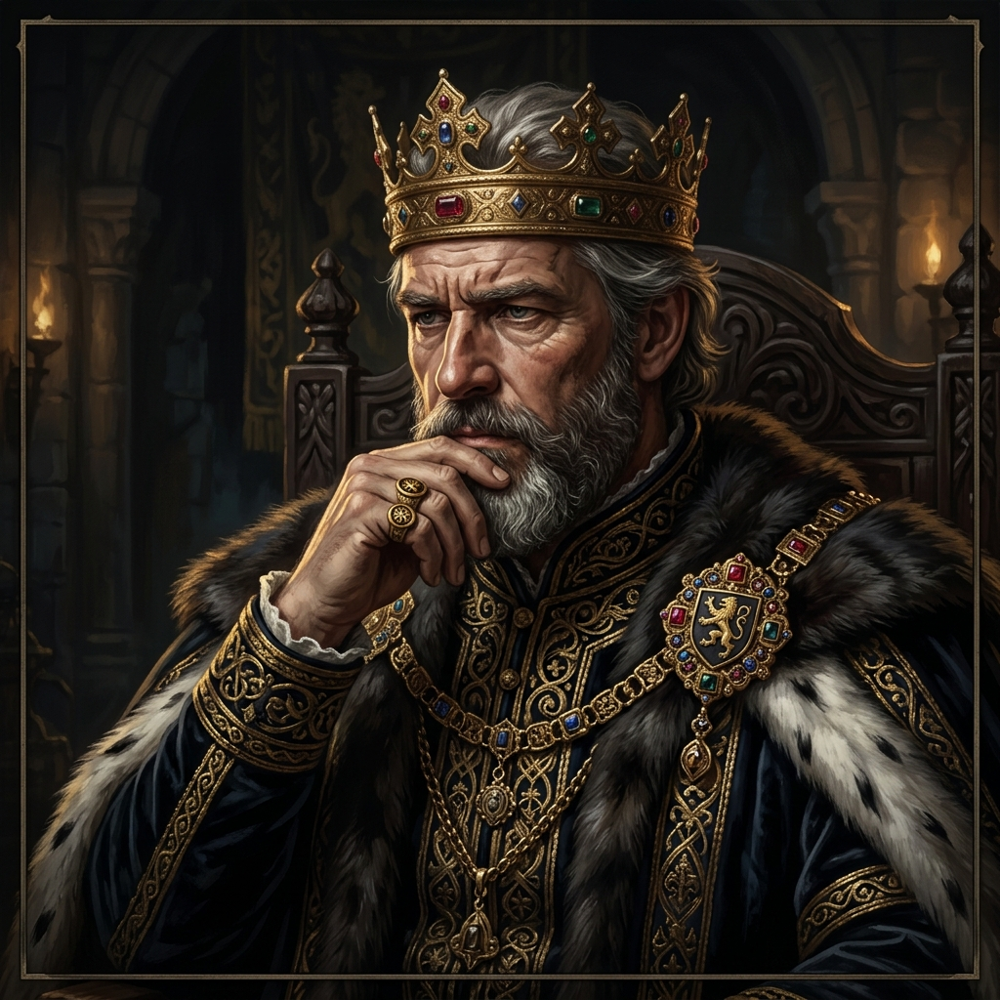
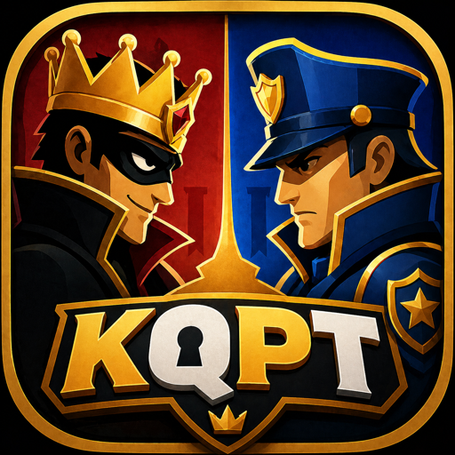
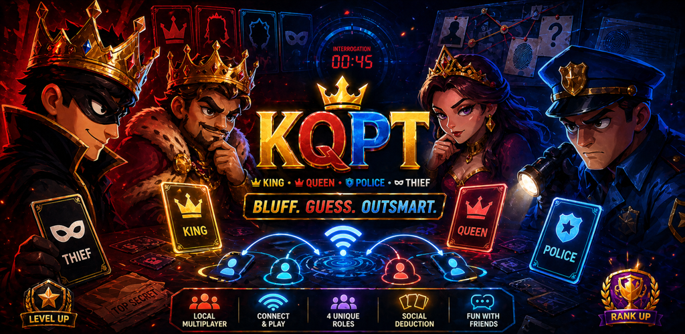
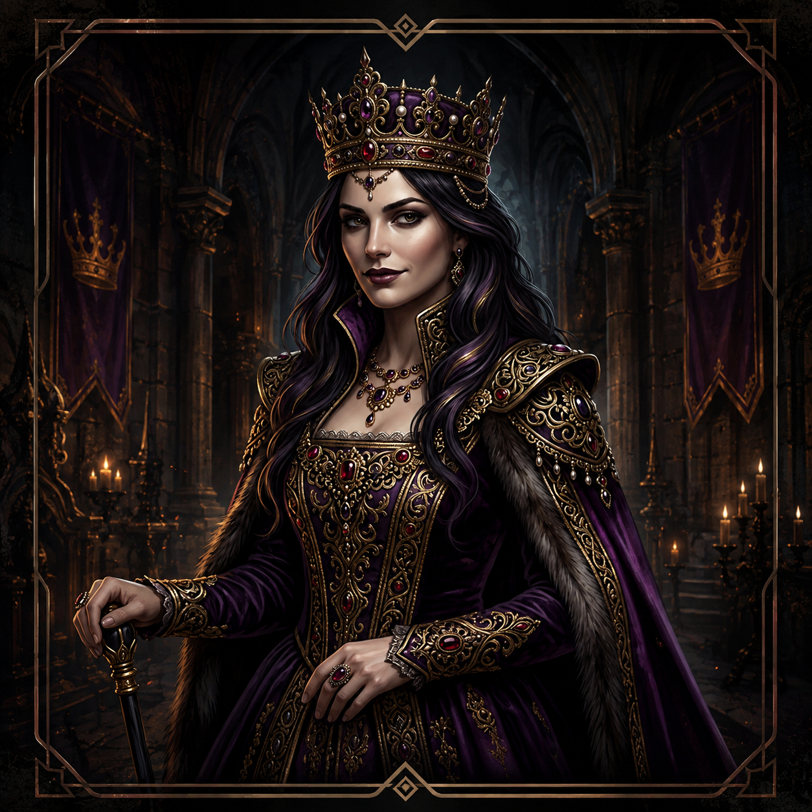
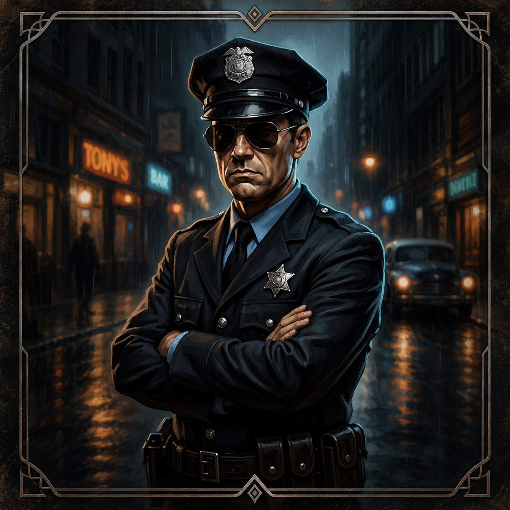
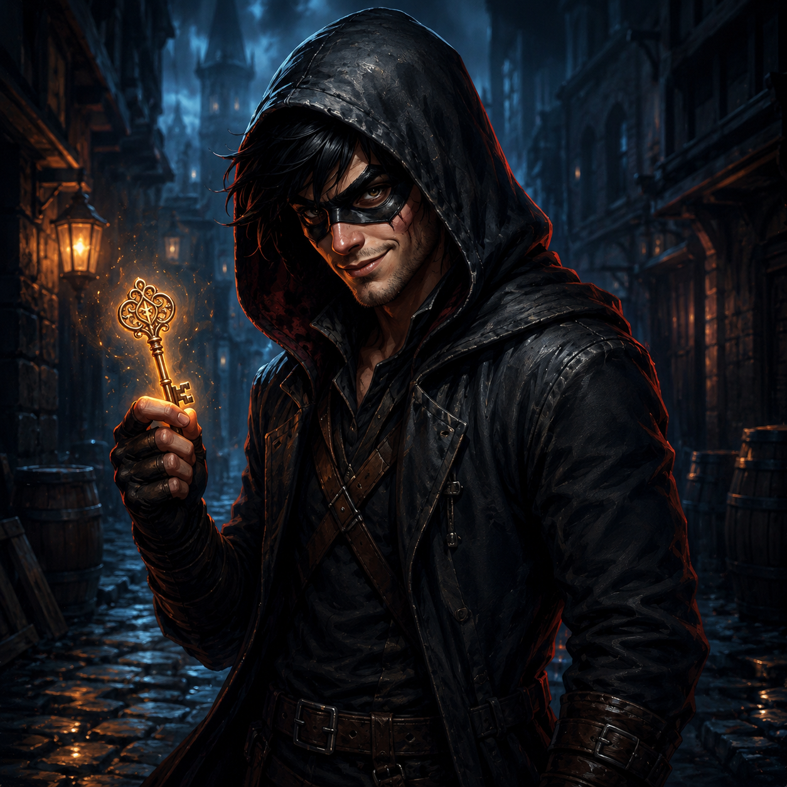
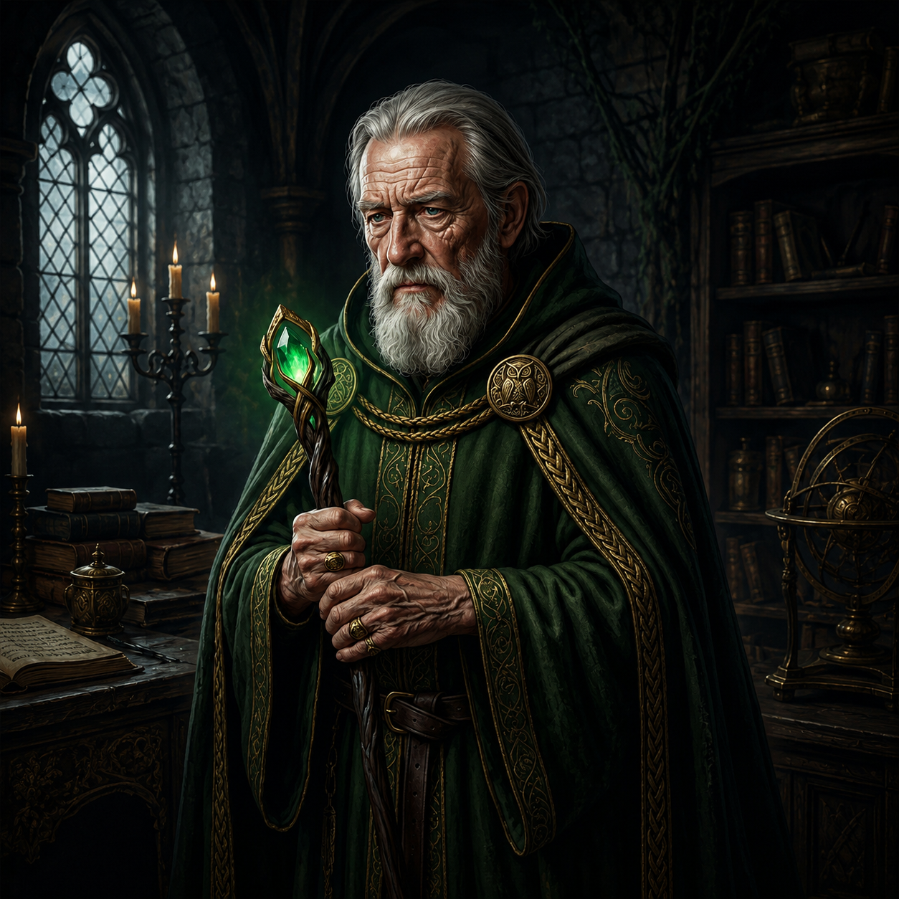
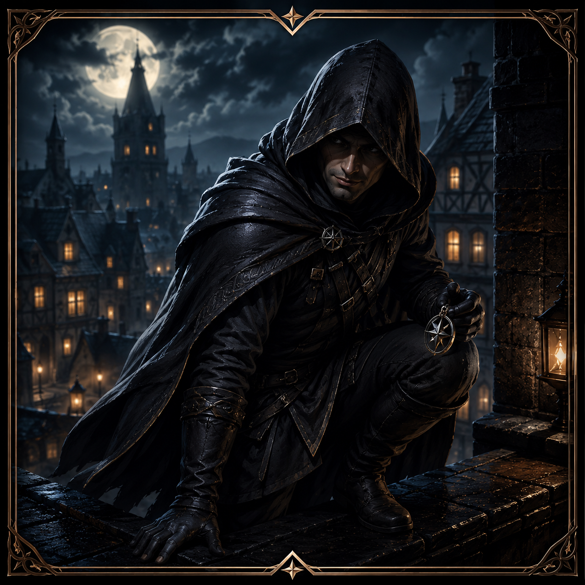

King
Stay hidden among the suspects. The crown earns 1,000 points each round.
1,000 POINTS
KQPT.Gather your squadTHE CLASSIC. A NEW CHAPTER.
The childhood game is back. Step into a world of kings, queens, police and thieves — where your best friend might be your best bluff.

MEET YOUR NEXT ALIBI
Start with Police and Thief. Add King at three players, Queen at four, Minister at five, and Spy at six.

Stay hidden among the suspects. The crown earns 1,000 points each round.
1,000 POINTS
Keep your royal identity secret while the Police investigates. Earn 800 points each round.
800 POINTS
Your identity is revealed. Identify the Thief to earn 600 points; a wrong accusation earns you zero.
600 IF CORRECT
Stay hidden and mislead the Police. Escape a wrong accusation to steal 600 points; get caught and earn zero.
600 IF YOU ESCAPE
Support the Kingdom during discussion while keeping your role hidden. Earn 700 points each round.
700 POINTS
Secretly know who the Thief is. Earn 500 points, with a 40% chance each round of a secret task worth another 500 if completed.
500 + TASK BONUSREMEMBER “WHO’S THE THIEF?”
The sideways glances. The confident accusations. That one friend who could never keep a straight face.
KQPT brings the spirit of King, Queen, Police, Thief to your phone. Bring your people. Bring your poker face.
A familiar kind of funTWO WAYS TO TEST YOUR POKER FACE
01 / CLASSIC MODE
Roles are assigned secretly each round. Only the Police is revealed. Everyone else remains a suspect as the Police reads the table and chooses who to accuse.
Catch the Thief: Police earns 600, Thief earns 0. Accuse the wrong player: Police earns 0, Thief takes 600. The other roles earn their fixed points.
02 / EVIDENCE MODE
Everyone except the Thief can see the secret evidence. Each player also gets a personality to act out. The Police asks indirect questions while the Thief listens, improvises, and tries to blend in.
Use suggested questions without revealing the clue. A correct accusation can earn the Police a speed bonus: +300 before 3 minutes, +200 before 6, or +100 before 9.
YOUR TABLE. YOUR RULE OF SUSPICION.
Gather 2–6 players. Play locally on one device, or host a game with everyone on the same Wi-Fi or mobile hotspot. Friends can discover the lobby or scan the host’s QR code.
Choose Classic or Evidence mode and your round count. Read your own role in secret. The Police is revealed to the table; all other identities stay hidden.
The Police chooses a suspect. Reveal the result, add the round’s points, then play again with freshly shuffled roles. Build your total score and earn XP toward ranks.
2 players: Police + Thief · 3: add King · 4: add Queen · 5: add Minister · 6: add Spy
With two players, the only other player is the Thief. Gather more friends for a wider field of suspects.
YOUR FRIENDS. YOUR SUSPECTS.
Make your next get-together a KQPT night.